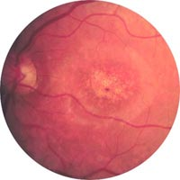
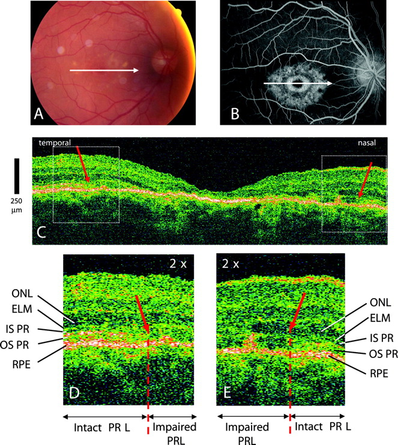

+ Bệnh Stargardt

* Định nghĩa:
+ Bệnh Stargardt
* Đặc điểm:
+ Bệnh thoái hóa hoàng điểm gi truyền và gia đình hay là bệnh Stargardt là một bệnh bao gồm nhiều thể thoái hóa hoàng điểm ở người trẻ ít nhiều có tính di truyền (Thể Best, Behr). Tổn thương giải phẫu bệnh là sự phá hoại lớp biểu mô thị giác trung tâm và lớp hạt bên ngoài. Tính di truyền của bệnh Stargardt có vẻ rất thay đổi: di truyền trội, di truyền lép đơn thuần. Hiếm thấy di truyền lép liên quan giới tính. Có nhiều trường hợp đơn phát.
+ Bệnh Stargardt biểu hiện ngay từ khi còn bé hoặc ở tuổi trưởng thành bằng triệu chứng quáng gà, và nhất là thị lực giảm dần. Giảm thị lực cả hai mắt, thường cân xứng, dần dần chỉ còn 1 đến 2/10, nhìn gần rất khó khăn, tuy nhiên không bao giờ bị mù hoàn toàn, vì thị trường chu biên vẫn nguyên vẹn.

+ Làm sơ đồ thị trường cho thấy có ám điểm trung tâm đôi khi rất rộng. Sắc giác bị tổn hại theo kiểu loạn giác trục xanh - đỏ, xảy ra trước giai đoạn mù màu. Trên nguyên tắc, thì quang sắc vẫn bình thường, điện võng mạc cũng bình thường, mặc dù có khi đường biểu diễn dưới mức bình thường, nhất là với ánh sáng đỏ.
+ Hình ảnh đáy mắt rất thay đổi, thùy theo từng người và từng gia đình. Tổn hại đầu tiên biểu hiện bằng sự mất óng ánh của võng mạc trung tâm với phù nhẹ, và nhất là có tình trạng sắc tố hoàng điểm không đều. Có những sắc tố óng ánh không điều giống như bọt ở miệng ốc sên trên vùng hoàng điểm.

Hình ảnh phân tích thoái hóa hoàng điểm sắc tố, loạng dưỡng hoàng điểm chấm vàng
+ Về sau, xuất hiện những tổn hại sắc tố, màu vàng nhạt xâm lấn và vây quanh vùng võng mạc trung tâm. Đến giai đoạn sau cùng thì sắc tố tỏa lan khắp cả vùng hoàng điểm mà lúc bấy giời đã trở nên tối xỉn và teo. Tổn hại sau cùng lan ra một vùng khá rộng mà trục lớn theo chiều ngang trong vòng cung các mạch máu thái dương.
+ Bệnh Stargardt ở thể thuần túy không có những tổn thương khác của đáy mắt. Tuy nhiên, thường hay phối hợp với thoái hóa ở võng mạc sắc tố hoặc loạn dưỡng võng mạc chấm vàng. Đôi khi người ta có mô tả những tổn thương khác ở mắt như nhãn cầu bé, dị sắc mống mắt hoặc tổn hại mạch máu võng mạc.
+ Cũng có gặp thoái hóa hoàng điểm Stargardt phối hợp với bệnh toàn thân như bệnh ở hệ thần kinh, rối loạn nội tiết và da.